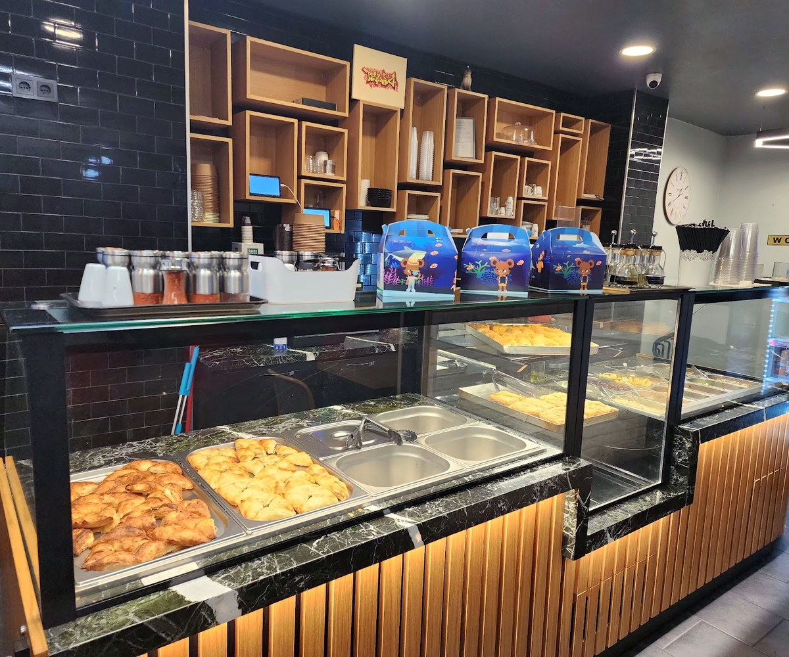

Grill méditerranéen, Grand-Rue
Télio
Souvlaki, pitas et assiettes grillées, grecs et anatoliens, dans la vieille ville.
La cuisine
Grill méditerranéensouvlaki grec et grillades anatoliennes
Le lieu
7, Grand-Ruevieille ville, avec terrasse
La viande
Halalsur place, à emporter ou en livraison
Les assiettes grill
Le Mix Grill Télio
Brochette de poulet, brochette d'agneau, köfte et saucisse, avec salade, tomate, tzatziki et frites.
Les autres assiettes suivent le même principe : brochettes de poulet, d'agneau ou de bœuf, côtelettes d'agneau, köfte ou biftek, avec pain pita.

En images
Chez Télio




Sur place ou à emporter
La carte
Mezédes & salades
Salade grecque
Tomate, concombre, salade, olives, feta, poivrons, origan
Dolmades
Feuilles de vigne farcies au riz et à la viande hachée, tzatziki
Tzatziki
Yaourt, concombre et ail
Melitzanosalata
Purée d'aubergines fumées
Tirosalata
Feta, piment, yaourt, ail, poivron vert
Taboulé
Tomate, persil, couscous
Salade de pois chiches
Pois chiches, concombre, tomate, poivron rouge, cornichon
Salade de fèves
Fèves, tomates, oignon
Pitas
Avec salade, tomate, tzatziki et frites
Pita brochettes de poulet
Pita brochettes d'agneau
Pita falafel
Dürüm köfte
Pita Télio
Viande hachée, fromage, tomate, oignon, frites
Assiettes grill
Avec salade, tomate, tzatziki, frites et pain pita
Mix Grill Télio
Brochette de poulet, brochette d'agneau, köfte, saucisse
Côtelettes d'agneau
Brochette d'agneau
Brochette de poulet
Brochette de bœuf
Köfte
Biftek
Gemisto
Feta et viande hachée de bœuf
Kebab
Falafel
Feuilletés & desserts
Spanakopita
Feuilleté farci à la feta, 3 pièces
Pita aux épinards
Feuilleté aux épinards, 3 pièces
Baklava
Pâte feuilletée, miel, pistache et noix
Ketaifi
Gâteau aux pistaches et au miel
Gâteau à l'orange
Au miel
Le lieu
Sur la Grand-Rue
Télio est au 7, Grand-Rue, dans la rue piétonne de la vieille ville, avec sa terrasse sous l'enseigne rouge.
Sur place, à emporter, ou en livraison avec Wolt.

Infos & accès
Nous trouver
Horaires
| Du lundi au jeudi | 11h – 22h40 |
| Vendredi et samedi | 11h – 23h30 |
| Dimanche | 12h – 21h30 |